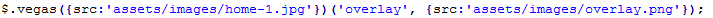

Velvet Template
This is the theme help documentation file. Please search this before contacting for support. Note: We do not support theme customizations beyond it's original functionality & appearance.
Live Demo Contact Us1. Getting started
We really appreciate that you bought our template. We hope that it will be serves you well. If your like our template just let us now or you can stay in touch with us through facebook or twitter. It would be great if you recomended us to your friends and colleagues. If you have some questions just send a message we are looking forward to your emails.
Your Pixelized team.2. Feedback
Like our work? Have some problem? Drop us line. We really like to hear about you. Especially we like to see your websites builded on our theme. Don't be shy and send us link to your branded new websites. The best sites we will posted on our Facebook or twitter if you give us your permission. Nothing is better feel than see our theme on working site.
Facebook Twitter3. Plugins
- 3.1 Bootstrap Validation
- 3.2 Font-awesome
- 3.3 Animate
- 3.4 Creative brands
- 3.5 Magnific popup
- 3.6 Isotope
- 3.7 Waypoints
- 3.8 Owl Carousel
- 3.9 CountTo
- 3.10 PHP mailer
- 3.11 Twitter Post Fetcher
- 3.12 Parallax
- 3.13 Video Background
- 3.14 Vegas
- 3.15 Color Switcher
3.1 Bootstrap Validation
This plugin checks correctly entered data into the contact form. Until all data are correctly entered into the contact form will not be sent. If you send the form and if any data is not filled or filled incorrectly, contact form displays a warning message.
For full documentation how to customize this plugin go to Bootstrap Validation
3.2 Font Awesome
It’s one of the most powerfull tools. Font Awesome gives you scalable vector icons that can instantly be customized — size, color, drop shadow, and anything that can be done with the power of CSS. Let’s take a look. In the „why choose us“ section you can find few icons on the left. This is a font awesome so let’s say we wanna change them to more suitable for your purposes. Open the index_normal.html in some editor and find the line number 399.
{kind=link}
Here you can change appearance of this icon just simply remove class „fa-globe“ and type for instance „fa-money“. Now save the changes and refresh the index_normal.html page and icon is different.
For full documentation how to customize this plugin (size, color, rotation etc.) and full list of different types of icons go to fontawesome.io
3.3 Animate
It is awesome CSS3 plugin which allows us to animated individual parts of our themes used in index_animated.html. Example is best so in the index page you can seen rounded image. When you refresh the page this object is slightly slide in down if you want to change this effect simply. If you don’t want this effects just index_normal.html
In this scheme we combine animate with waypoint plugin so if you want to change this effect open custom.js file and edit lines following lines. Insted of „fadeInLeft“ just simply try another effect eg. „bounceIn“
For full documentation and list of different types of animations go to http://daneden.me/animate
3.4 Creative Brands
It’s css add-on more than plugin. This add-on edits appereance of logos social sites in the footer. For more brands.pixelized.cz
3.5 Magnific Popup
Magnific Popup is a responsive lightbox & dialog script with focus on performance and providing best experience for user with any device.
For full documentation go to dimsemenov.com/plugins/magnific-popup/
3.6 Isotope
This plugin allow us really cool effect which you can see in "latest work" section when you clicked on some of these buttons.
{kind=link}
Then you can watch cool shuffle effect. This plugin we bought specially for you.
Full documentation you can check here isotope.metafizzy.co
3.7 Waypoints
You can see this plugin when you scrolling down the page and each section is showing when you scroll there. If you want to remove this effects just use index_normal.html. This plugin is also used for loading progress bars in "WHY CHOOSE US" section
For full documentation of this plugin go to https://github.com/imakewebthings/jquery-waypoints/
3.8 Owl Carousel
We decided replace default bootstrap carousel to amazing Owl carousel. This plugin is used for changing testimonials under the "latest work" section.
This carousel has tons of features it’s a powerfull tool.
For full documentation go to www.owlgraphic.com
3.9 jQuery CountTo
This plugin allows us visualize counting to some number. You can see this plugin under "what we do" section.
{kind=link}
You can easily customizing it by following this steps.
- Go to line 330
- Edit atributes data-from, data-to, data-refresh-interval to values that fits to your purposes.
Full documentation you can check here github.com/mhuggins/jquery-countTo
3.10 PHP mailer
We prepared for you send.php file. This is only example how to use php mailer plugin for sending email through contact form. Only thing you have to do is download that phpmailer plugin from here. For full documentation check php mailer.
3.11 Twitter Post Fetcher
This plugin is used in footer section and displays your latest tweets. You only have to paste your Twitter Widget ID to connect your Twitter account. (line 72)
{kind=link}
How to find your Twitter Widget ID is described here
For mor information how display your tweets check full documentation of this plugin. Twitter Post Fetcher
3.12 Parallax
This plugin causes that image background moves slightly slower than the user scrolls. Initialization of this plugin is very simple just use "paralax function" on some CSS class or ID. (custom.js)
{kind=link}
This class (ID) must have some bacground image. (custom.css)

Another Parallax examples you can find here
3.13 Video Background
This plugin causes that some selector has video on its background. Here is simple initialization script:
{kind=link}
On the line 133, this part of script mutes the sound of video. If you don't want to use video in your page you can replace it by background image and use parallax plugin on it.
Full documentation of VideoBG plugin is here
3.14 Vegas
Vegas is plugin to set up a background with different types of overlays in our theme. You can find complete documentation here
We prepared for you 2 options, first is static image and second is slideshow. There is lot of other options which you can find in plugin's documentation. Default option is slideshow

We used slideshow of 3 images. If you want to change these images just go to "images" folder and replace them. You can also change overlay pattern (line 123).
If you want to use only static image just delete the previous code of initializing slideshow and uncomment following code in "custom.js" (line 113).
{kind=link}
3.15 ColorSwitcher
It is plugin developed by ourselfs. It allows you to change a color in real time. Basically you can change the whole appereance by yourself.
Now let’s take a look how to set your favourite look.
Setup color
- At first you have to decided which color is best for you.
- Open .html page in some editor.
- To change your color find line 42.
{kind=link}
Now just simply change (underlined word) "red" to the one you choosen on the start of this procedure "blue" now save this change and refres edited page and enjoy.
All colors
| Color | Hex code | Preview |
|---|---|---|
| Red | AE2E01 | |
| Blue | 01AE68 | |
| Blue | 0163AE | |
| Purple | 550D67 | |
| Orange | AE7301 | |
| Brown | 7F623D | |
| Yellow | D5BA2B | |
| Pink | E66992 | |
| Light Green | 61A312 | |
| Light Blue | 52CBDD |
Remove ColorSwitcher
When you are done with color changes is no longer necessary to have ColorSwither on your page.
- Open .html files and delete everything between lines 67 - 88 including. On the image below are the lines which you delete. Now the icon of ColorSwitcher on the page is gone.
- Delete file color-switcher.css
- Delete file color-switcher.js
4. FAQ
If I buy an Single application license, can I remove your Copyright-Line?
Yes, in any kind of license you definitely can remove copyright. But if you like our work you can place there just "created by pixelized" it is completely up to you.
How do i connect contact form with my email.
This is only html5, css3 & jQuery theme. There isn't any script to do it. You have to use some external script probably PHP or something. We are selling many of copies and everybody has slightly different requirement so we are not able to build single one script.
Nevertheless we have prepared for you little example how can look like PHP script for sending messages. For more informations check PHP mailer.
Can i use, images included in this theme?
In credits section you can find links to every image. So find image you want in credits and check licence on source page.
5. Credits
5. 1 Plugins
- Bootstrap Validation
- Font Awesome
- Animate
- Creative Brands
- Magnific popup
- Isotope
- Waypoints
- Owl Carousel
- jQuery CountTo
- PHP mailer
- Twitter Post Fetcher
- Parallax
- Video Background
- Vegas
5. 2 Photos & Images
- Home Image 1
- Home Image 2
- Home Image 3
- Psd Safari Yosemite Browser Mockup
- Responsive Showcase
- Flat icons - Essentials
Portfolio images (Sample images from mockups - graphicburger.com)
- 3D Wall Logo MockUp
- Art Book MockUp PSD
- Cutout Logo MockUp
- DVD & Envelope MockUp
- Vintage Logo MockUp PSD
- iPhone 6 Photography MockUp
- Natural Paper Printed Logo MockUp
- iPhone Photography MockUp
- Wood Engraved Logo MockUp #2
- Vintage Label Tag MockUp
- Embroidered Logo MockUp
- Photorealistic Magazine MockUp